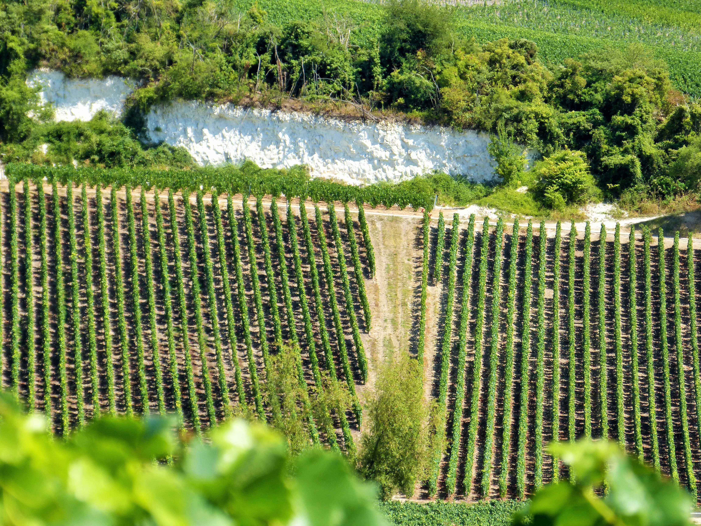

Association des vignerons de Gouvieux
Les vignerons au service de la culture godvicienne
L’association cultive la vigne communale depuis 2002 et fabrique principalement la Perle de Gouvieux, vin mousseux selon la tradition champenoise en chardonnay et pinot noir.
